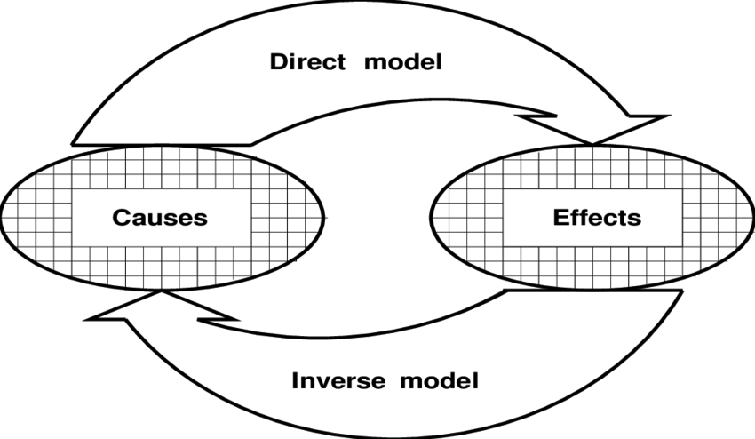

Week 7: actions and consequences
Lecture 7.1: motor control

motor control

- The problem(s) of motor control
- Motor control as an inverse problem; ill-posedness
- The agonist/antagonist principle and force fields
- Decision-making in motor control
- The Bayesian perception/action loop
the problem(s) of motor control
This cat cartoon is a very incomplete illustration of the problem of motor
control, because a jump is ballistic (= hardly any control past the launch
phase).
Generally, these are the aspects of control that must be addressed:
- [local environment layout] geometry
- [body + immediate environment: the configuration] kinematics and inverse kinematics
- [body + immediate environment: the forces] dynamics and inverse dynamics

forward and inverse problems
Forward or direct problems: from causes to effects.
Inverse problems: from effects to causes.
| domain | forward | inverse |
| motor control of the arm |
kinematics: from [actual] joint angles to effector position
dynamics: from [actual] joint torques to effector force
|
kinematics: from [desired] effector position to joint angles
dynamics: from [desired] effector force joint torques
|
| vision |
shape: from surface shape to image intensities
color: from source spectrum and surface reflectance to image intensities
|
shape: from image intensities to surface shape
color: from image intensities to source spectrum
and surface reflectance
|
Inverse problems are typically
ill-posed — for instance, their
solution may be under-determined by the data, requiring additional
assumptions (recall Lecture 3.2).
forward and inverse problems (cont.)
Forward or direct problems: from causes to effects.
Inverse problems: from effects to causes.
| domain | forward | inverse |
| social dynamics |
money: from the factors that shape the economy to
the actual socioeconomic situation (e.g., inequality)
social justice: from the factors that shape "law
enforcement" policy to actual outcomes (e.g., police violence)
|
money: from [current / desired socioeconomic situation] to
[the factors that shape it / effective interventions
for socioeconomic justice]
social justice: from [current / desired societal outcomes]
to [their determinants / effective actions]
|
Inverse problems are typically
ill-posed — for instance, their
solution may be under-determined by the data, requiring additional
assumptions (recall Lecture 3.2).
re: "domestic terrorism"
Source: Yahoo news
Erin Brockovich is an American consumer
advocate and environmental activist who was instrumental in
building a case against Pacific Gas & Electric Company (PG&E)
involving groundwater contamination in Hinkley, California in
1993. Her successful lawsuit was the subject of the
Oscar-winning film, Erin Brockovich (2000)."
[deep breath]
back to motor control: one-shot vs. incremental
In general, motor control involves planning the desired movement
and coordinating the forces needed to execute it — typically
INCREMENTALLY and subject to ON-THE-FLY CORRECTIONS.
motor control: embodiment and situatedness
Key constraints that apply to the problem of motor control stem
from the principles of embodiment and situatedness.
|
John Carter of Virginia discovers that he needs
to recalibrate.
|
|
motor control: embodiment and situatedness
Key constraints that apply to the problem of motor control stem
from the principles of embodiment and situatedness.
|
The octopus O. aculeatus maintains its algae-like
camouflage while walking backwards on two arms, using the outer part
of each arm like a conveyor belt (video by Crissy Huffard/UC Berkeley).
|
|
motor control: agonist/antagonist
Key constraints that apply to the problem of motor control stem
from the principles of embodiment and situatedness.
Although some of the information relied upon by the motor system
(especially for locomotion, orientation and reproduction) is innate,
individuals must LEARN — acquire and store motor memories — during their
lifetimes.
In vertebrates, many of these take the form of activation values for
agonist-antagonist muscle pairs, as illustrated here for the case
of arm control.
motor control as equilibrium trajectory shaping (Shadmehr)

Arm position, represented here by the shoulder and elbow angles,
\(q_1\) and \(q_2\), can be controlled by setting the
equilibrium point of the arm musculature. (Note the
conceptual parallels to MEMORY.)
Left:
the restoring force generated by a subject's arm can be measured by
a robotic manipulator that attempts to displace it from the
equilibrium position. Center and right: Maps showing the
force fields generated by the arm in the two configurations
indicated in the left panel.
reality check: the agonist-antagonist picture is overly simple
On the right: finger control.
[The shoulder complex is a design/control mess, too.]
What about learning?
"It takes a human being about 14 thousand brain-hours to learn to
run. An AI can learn to do it in less than half as many CPU-hours, but
the results are
like this."
the overarching problem in control
Consider the problems that are the staple of psychology textbooks, such as:
- (under "perception") object recognition, etc.
- (under "memory") storage, retrieval, etc.
- (under "attention") focusing, steering, etc.
Who orchestrates the processes that solve these problems?
Allegedly, the so-called "central executive".
Having a "central executive" seems to be the only possible
solution to the ultimate challenge in behavior — DECIDING WHAT TO
DO NEXT.
the "central executive" and the homunculus fallacy

The central executive / homunculus "explanation" invites
an infinite regress, so this
cannot be how decisions are made, motor or others.
A better [mechanism-level] explanation: the multiple computational
processes that constitute a mind interact dynamically; decisions,
along with the other aspects of behavior, emerge from
these interactions incrementally, over time.
motor control: distributed, hierarchical decision making
Behavior doesn't just "happen": EACH motor act is the result of a DECISION on
the part of the animal.
Decision making is HIERARCHICAL: typically, only the most abstract
(high-level) decisions are
explicit* (and perhaps
conscious); most are not.
*Re "explicit": think of
knocking a glass off the table with your elbow while reaching
for salt. The decision to reach is explicit; the side effect is
not — the extremal position of your elbow was never explicitly
computed by the brain (it was implicitly computed by the body).
motor control and hierarchical decision making
Hierarchical decision making in
these robots is most probably carried out by
humans.
[Safety override for Spot]
[problem- and algorithm-level] decision theory (Körding & Wolpert)
Decision theory quantifies how people [and other animals] should choose in the context
of a given utility function and some partial knowledge of the world.
The expected utility of an action is defined as:
$$
E\left[Utility\right] = \sum_{possible~outcomes} p\left(outcome \mid
action\right)U\left(outcome\right)
$$
where \(p(outcome\mid action)\) is the probability of an outcome given an
action and \(U(outcome)\) is the utility associated with this
outcome.
According to DECISION THEORY people choose the action so as to
maximize the expected value of utility. Choosing according to this
criterion is the definition of choosing rationally. Within the
framework of ECONOMICS, numerous problems have been described in
these terms. For example, people's decision about the ratio of
risky to non-risky assets in their portfolio has been
described in terms of people having partial knowledge about their
future earnings while maximizing their future utility. Companies'
decisions about
wages and employment of workers have been modelled in terms
of the company having partial information about workers' ability
and maximizing profits. The decisions of the central bank
to increase or decrease interest rates have been modelled
in terms of optimally reducing the uncertainty about future
inflation.
[CLIMATE] "no action" ≠ preserving the status quo
If no action is taken towards CO2 emission reduction,
projected temperature rise in 2100 is 1.4 degC at a
minimum, and 5.8 degC at a maximum.
Source:
The Third Assessment Report (2018) by
Intergovernmental Panel on Climate Change (IPCC).
[BACK TO] decision theory (Körding & Wolpert, 2006)
Decision theory quantifies how people should choose in the context
of a given utility function and some partial knowledge of the world.
The expected utility of an action is defined as:
$$
E\left[Utility\right] = \sum_{possible~outcomes} p\left(outcome \mid
action\right)U\left(outcome\right)
$$
where \(p(outcome\mid action)\) is the probability of an outcome given an
action and \(U(outcome)\) is the utility associated with this
outcome.
Economics tries to understand both how agents should optimally
behave when deciding under uncertainty and how they actually
behave in such cases. Bayesian decision making is the systematic
way of combining Bayesian estimates of probability with
utility functions.
Optimal control aims to solve similar problems where the decision
is not just happening at one point of time but a continuous output
(such as muscle force). The expected utility changes constantly
according to new information coming in. Solutions to this problem
typically use the notion of 'cost-to-go': the average integrated cost from
a current state to a target state.
estimating utility functions through psychophysical experimentation (Körding & Wolpert, 2006)
(a) Indifference (constant-cost) curves in the force–time
space as predicted by different cost (utility) functions. The cost
is the same along each curve.
(b) The cost is inferred from the subject's decisions. The "hotter"
the colour, the less desirable the force.
Human volunteers had to produce forces of varying
magnitude and duration. During each trial subjects
had to choose which of two combinations of force
magnitude and duration they prefer. From a large number
of such choices it is possible to infer the indifference lines
in the F–T space. From these indifference
curves it is possible to infer the cost function.
a refresher: Bayesian integration of priors with observations (Körding & Wolpert, 2006)
\(\require{color}\)
When we have a Gaussian prior distribution \(p\left(x\right)\) and we have a noisy
observation \(o\) of the position that leads to a Gaussian likelihood
\(p\left(o\mid x\right)\), it is possible to use Bayes rule to
calculate the posterior distribution (how probable
is each value given both the observation and the prior knowledge):
$$
p\left(x\mid o\right) = \frac{p\left(o\mid x\right) p(x)}{p(o)}
$$
This equation assigns a probability to every possible value. If we
assume that the prior distribution \(p\left(x\right)\) is a
Gaussian with variance \(\sigma^2_p\) and mean \({\color{green}\mu}\) [green]
and that the likelihood \(p\left(o\mid x\right)\) is
also a Gaussian with variance \(\sigma^2_o\) and mean \({\color{red}o}\) [red], it is
possible to compute analytically the posterior, which is then also
Gaussian [yellow]. The An optimal estimate
\(\hat{x}\) that is the maximum of the
posterior is \(\hat{x} = \alpha {\color{red}o} + \left(1 - \alpha\right){\color{green}\mu}\),
where \(\alpha = \frac{\sigma^2_p}{\sigma^2_p + \sigma^2_o} \le 1\).
Moreover the width of the posterior is \(\sigma^2 =
\alpha\sigma_o\).
Bayesian integration in a perceptual-motor task (Körding & Wolpert, 2006)
(a) Perception and movement are beset by uncertainty. When we briefly look at
our hand we cannot be certain where exactly it is. The resulting
uncertainty is sketched as the grey probability distribution around the
finger at upper left. When we only feel our hand without looking we might have
more uncertainty (below). Right: if we make a fast movement from a starting
position to a target we will not always hit the target (X) but there will be some
probability distribution of endpoint position.
(b) Example: The other player is hitting the ball. Seeing the ball, we can
estimate that it will land in the red region. We have a prior belief that
the ball will land in the green region. The black ellipses denote the
posterior, the region where the Bayesian estimate would predict the ball
to land.
(c) The experimental set-up in typical movement psychophysics
experiments.
(d) Human subjects' reliance on the prior as a function of increasing
perceptual uncertainty. (From the previous slide, the larger the
likelihood noise \(\sigma_o\), the larger the weight of the prior
mean \(\mu\) in the posterior maximum \(\hat{x}\).)
(e) The prior inferred from subject behavior, for the different
conditions and subjects. The actual distribution used in the
experiment is shown in red.
the (Bayesian) motor control loop (Körding & Wolpert, 2006)
In generating a movement, the controller, an optimal decision maker, takes
into account both the output of the Bayesian estimation process and
the utility function (which typically CHANGES over time).
The Bayesian estimator combines:
- inputs from the sensors (for example, about limb positions);
- prior knowledge;
- the efference copy (a copy of the signal sent by the central
nervous system to the muscles).
This Bayesian approach leads to a better estimate of possible outcomes than any
estimate that is only based on the sensory input.
[EXTRA] a reality check: some major components of the behavioral control system
Speaking of control loops: a bit of perspective on the brain...
Gray arrows: corticofugal projections; open arrows and arrowheads: projections to
effectors; gray box: the basal
ganglia; stippled ovals: preganglionic
autonomic motor nuclei. GPi, internal segment of globus pallidus; GPe,
external segment of globus pallidus; STN, subthalamic nucleus; SNr,
substantia nigra pars reticulata.
[Motor Control,
Steven P. Wise and Reza Shadmehr, Encyclopedia of the Human Brain, vol.3
(2002)]
EXTRA for neurobio students: brain basis of ON-THE-FLY perception/action (after Sherman and Guillery, 2006)

"Schematic, and simplified, representation of
thalamic and
cortical connections
with motor centers.
A. A widely
used representation of
afferent pathways entering through thalamus being
processed through a parallel and hierarchical series of cortical connections, and
then passed on to motor centers or memory
storage. [Consider this
example from some online course or other.]
B. A representation of the connections described in
earlier chapters and in this chapter, showing first order (FO)
and higher order (HO) thalamic relays receiving from ascending
and corticothalamic afferents, respectively, with each of these
afferents sending axonal branches to motor or premotor centers.
C. A schema to stress that essentially all
cortical areas have connections to motor or premotor centers. The extent to
which they have branches going to the thalamus remains largely
unexplored."
"Not only CAN `motor assembly begin before sensory signals reach
the highest levels' but that it MUST begin before the
sensory signals even reach the thalamus, and that it must
accompany corticocortical processing at essentially every
stage."
— S. M. Sherman and R. W. Guillery
(2006). Exploring the
Thalamus and Its Role in Cortical Function, MIT
Press, p.362.
EXTRA: brain basis of ON-THE-FLY perception/action (after Sherman and Guillery, 2006)

A. Direct
lemniscal (continuous lines) and
anterolateral
(interrupted lines) pathways to the thalamus.
B. Additional connections
established by branches of the direct pathways.
"Each axon reaching the thalamus
will carry messages about the condition of one or several receptors and
in addition will carry information about the instructions that are already
on their way to one or more motor pathways. One should not expect
that the cortical analysis will reject or annul this “additional” information
simply because it is not a part of what classical physiology has seen
as the information carried in sensory pathways. It is reasonable to expect
this copy of motor instructions to be an integral part of the perceptual
process."
— S. M. Sherman and R. W. Guillery
(2006). Exploring
the
Thalamus and Its Role in Cortical Function, MIT
Press, p.367.